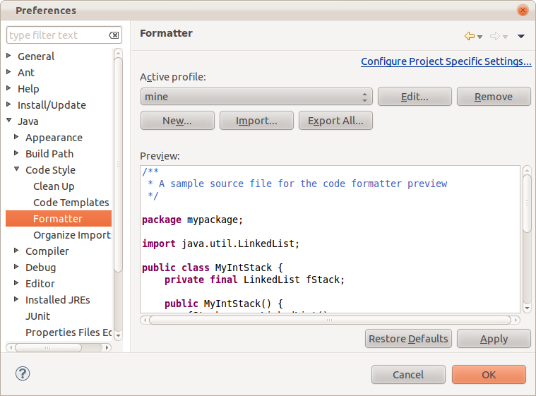
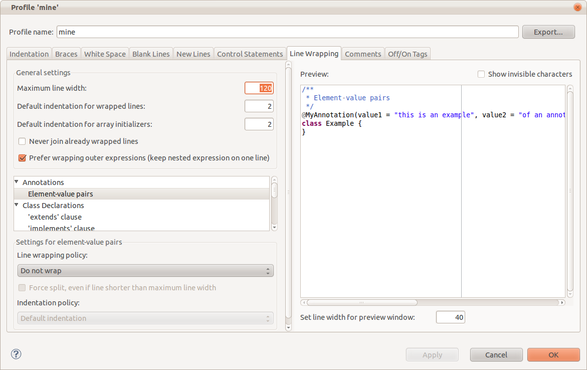
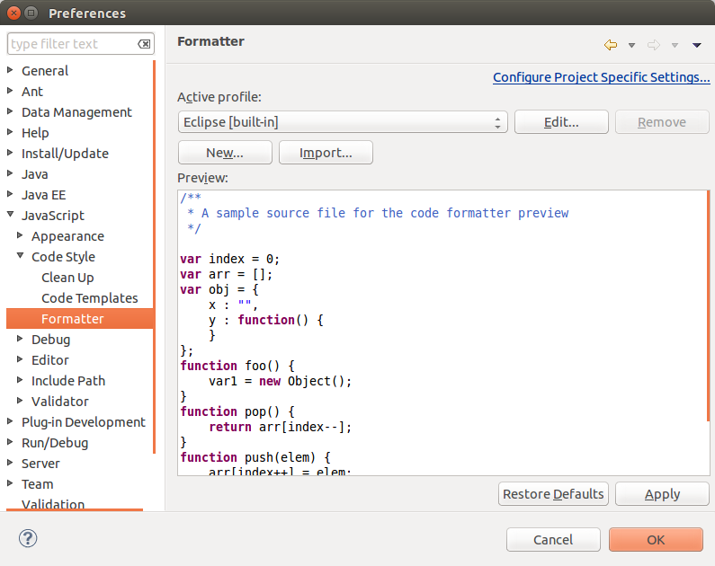
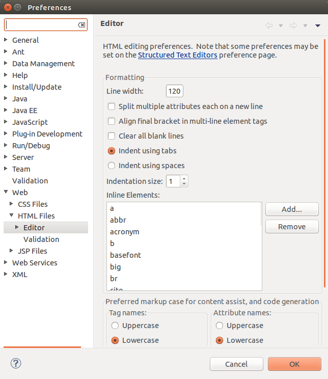

Eclipse includes an automatic source code formatter. This is very convenient because you don't have to worry about indentation when you move code into a different block. However, long lines may be split into multiple lines by the formatter. The default length of a line is 80 characters. You can change this by going to
Window -> Preferences -> Java -> Code Style -> Formatter

You may have to create a new profile:

Window -> Preferences -> JavaScript -> Code Style -> Formatter

Window -> Preferences -> Web -> HTML Files -> Editor
